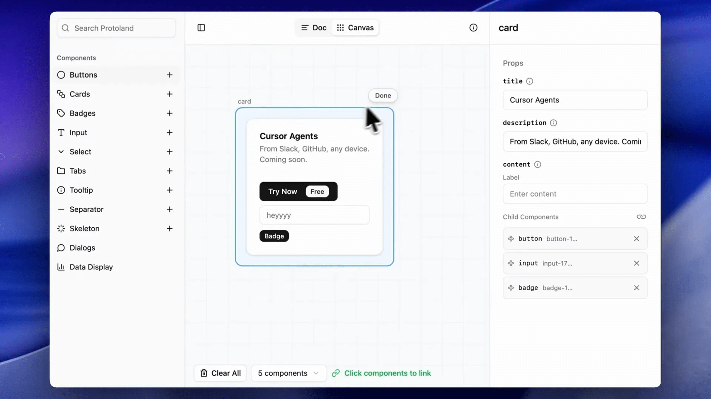
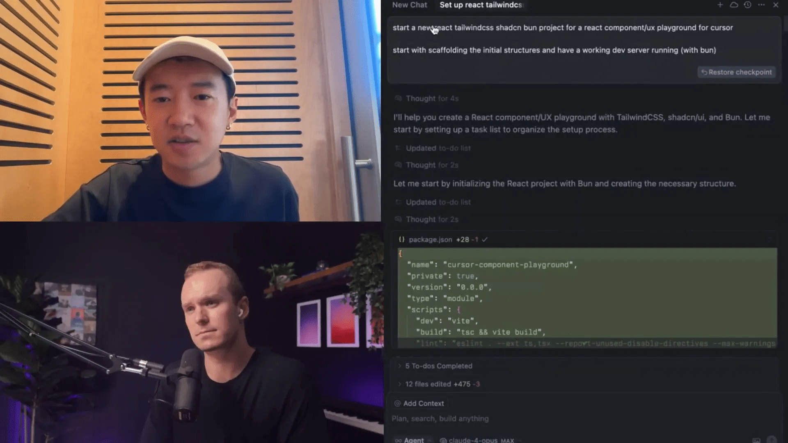
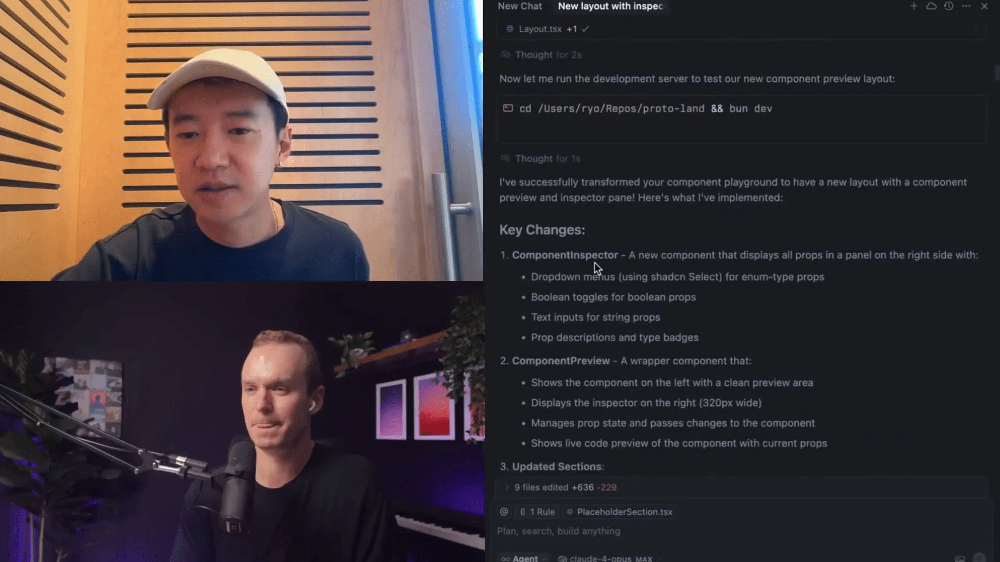
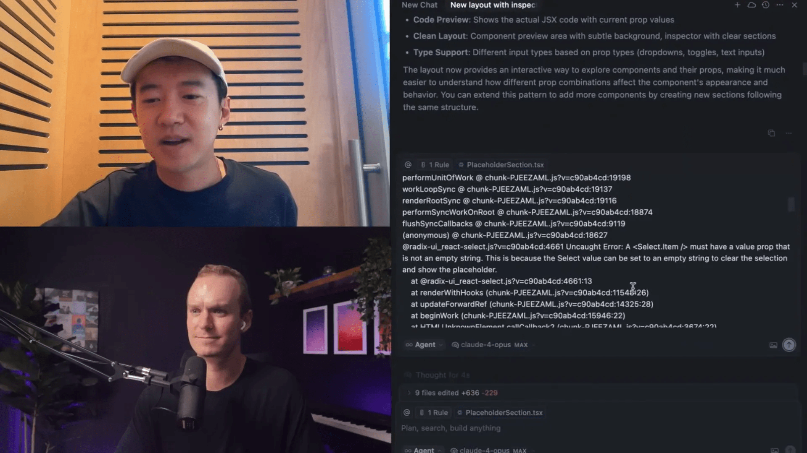
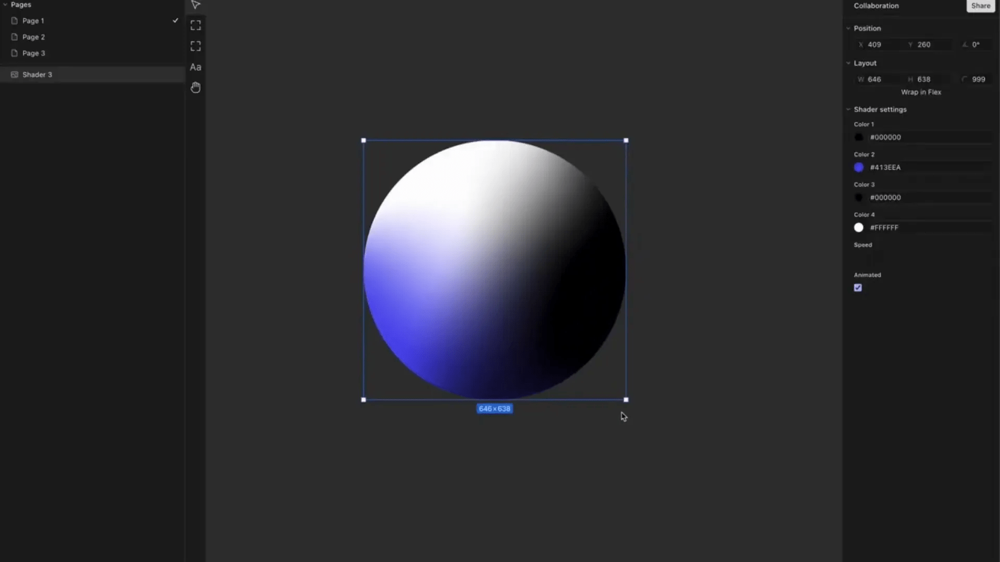
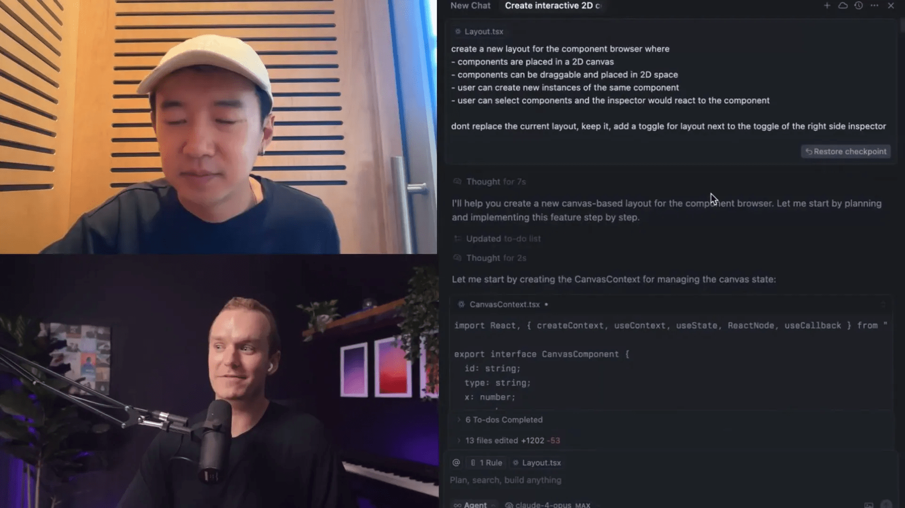
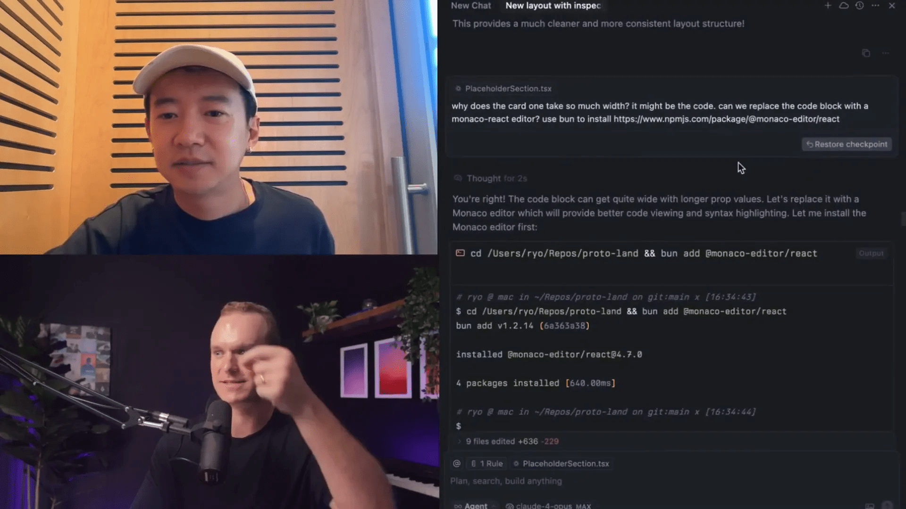

Quando penso em vibecoding cursor bolt lovable replit ai, a primeira pessoa que me vem à mente é Ryo Lu, o Head de Design da Cursor. Ele é um verdadeiro pioneiro, sempre experimentando e inovando com projetos como ReOS e Proto Land. Neste artigo, vou compartilhar um mergulho profundo no processo criativo dele, mostrando exatamente como ele usou prompts de IA para transformar uma ideia do zero em um produto funcional, o Proto Land.
Se você está curioso sobre como construir seus próprios projetos usando inteligência artificial, especialmente em design e desenvolvimento front-end, este conteúdo é para você. Vou detalhar cada etapa, refletir sobre as lições aprendidas e dar dicas valiosas para designers que querem abraçar essa nova era de vibecoding.

Índice
- 🔍 O Que é Vibecoding e Por Que Ryo Lu é o Mestre Disso
- 🛠️ Do Zero ao Scaffold: Construindo a Base com IA
- 🧩 Fragmentando o Processo: Como Organizar as Conversas com a IA
- 🖼️ Criando Layouts e Funcionalidades com Prompts Simples
- ⚙️ Corrigindo Erros e Refinando o Código na Prática
- 🎨 A Experiência do Designer sem Perder a Essência do Código
- ✨ Dicas Práticas para Começar com Vibecoding
- 🖱️ Construindo um Canvas Interativo do Zero
- 📏 Equilíbrio Entre Contexto e Simplicidade nos Prompts
- 💡 Reflexões Finais: O Futuro do Vibecoding e a Relação Humano-IA
- ❓ Perguntas Frequentes sobre Vibecoding com IA 🤖
- 🚀 Conclusão: Como Abraçar o Vibecoding com Cursor e IA
🔍 O Que é Vibecoding e Por Que Ryo Lu é o Mestre Disso
Vibecoding é uma forma fluida e experimental de codificação que combina criatividade, improvisação e o uso intensivo de IA para acelerar processos. Em vez de escrever código linha a linha com rigor absoluto, o vibecoding é mais como esculpir uma ideia, ajustando, testando e moldando o produto ao longo do caminho.
Ryo Lu é um exemplo perfeito dessa abordagem. Como Head de Design da Cursor, ele utiliza modelos de IA para lidar com tarefas que vão desde a criação da estrutura inicial do projeto até ajustes finos de UX/UI, tudo isso com prompts simples e diretos. O que o diferencia é a sua capacidade de equilibrar a autonomia da IA com sua própria visão criativa e controle manual.
Ele frequentemente fala sobre o processo de desenvolvimento como uma escultura: em vez de começar com um plano detalhado, ele começa com um “bloco de argila” — um esqueleto básico de código e componentes — e vai refinando até que o produto tome forma.

🛠️ Do Zero ao Scaffold: Construindo a Base com IA
O ponto de partida para Ryo foi um prompt simples e direto: criar um novo projeto React usando chassis CSS e BOM, com um playground UX para a Cursor, e um servidor de desenvolvimento rodando com BUN. Nada muito elaborado, apenas a base para começar a esculpir.
O mais impressionante é que, durante esse processo inicial, a IA até identificou que a documentação da TailwindCSS havia mudado (da versão 4 para uma nova forma de importação) e buscou automaticamente na web a maneira correta de configurar o projeto. Isso eliminou a necessidade de Ryo pesquisar manualmente, economizando um tempo precioso.
Após esse primeiro prompt, o projeto estava configurado e rodando, pronto para que ele começasse a adicionar componentes e funcionalidades específicas.
Essa etapa mostra como o vibecoding cursor bolt lovable replit ai pode acelerar a fase inicial do desenvolvimento, deixando o criador livre para focar no design e nas funcionalidades que realmente importam.
🧩 Fragmentando o Processo: Como Organizar as Conversas com a IA
Uma das coisas que aprendi observando o trabalho de Ryo é como ele segmenta o processo em chats isolados, cada um focado em uma tarefa específica. Por exemplo, depois do scaffold inicial, ele não tenta resolver tudo em um único prompt, mas sim cria um novo chat para cada funcionalidade, correção ou layout.
Isso ajuda a manter o contexto limpo e evita que a IA fique confusa com informações demais. No entanto, para tarefas mais complexas, ele às vezes mantém um chat mais longo, que abrange vários aspectos relacionados, para que a IA possa entender melhor o escopo geral.
Essa abordagem balanceada é fundamental para quem quer usar IA no desenvolvimento: dividir para conquistar, mas sem perder a visão do todo.
🖼️ Criando Layouts e Funcionalidades com Prompts Simples
Um exemplo interessante é quando Ryo pediu para a IA criar um novo layout padrão que apresenta o componente com um painel de inspeção à direita. Esse painel mostraria todas as propriedades do componente, que poderiam ser alteradas por menus suspensos e interações via chat.
O prompt não era muito detalhado, mas continha algumas diretrizes importantes, como o uso de componentes específicos que a IA já conhecia. O resultado foi que o sistema baixou os chassis e componentes necessários, criou arquivos e seções novas, e ajustou o layout para incluir o painel de inspeção e ícones.

Curiosamente, Ryo não lê cada linha do código gerado pela IA. Ele prefere abrir o navegador, ver o que foi criado e interagir diretamente com o resultado no playground. Essa interação visual é essencial para o processo de vibecoding, pois permite ajustes rápidos e iterativos.
⚙️ Corrigindo Erros e Refinando o Código na Prática
Durante o desenvolvimento, Ryo enfrentou erros e bugs, como problemas de layout ou importações erradas. Em vez de tentar resolver tudo manualmente, ele simplesmente copiava as mensagens de erro do navegador e colava no chat com a IA, pedindo para que ela corrigisse.
Esse ciclo de feedback rápido é uma das forças do vibecoding cursor bolt lovable replit ai. A IA age quase como um assistente inteligente que entende o contexto e pode ajustar o código em tempo real, permitindo que Ryo continue focado no design e na experiência do usuário.

🎨 A Experiência do Designer sem Perder a Essência do Código
Muitos dizem que designers precisam se tornar engenheiros para acompanhar o ritmo atual, mas Ryo acredita que isso não é verdade. Ferramentas como o Paper (uma plataforma que ele recomenda) oferecem o melhor dos dois mundos: uma interface que lembra o Figma, mas que gera código real no canvas.
Isso significa que designers podem explorar livremente, criar protótipos e fazer alterações visuais, enquanto os desenvolvedores podem simplesmente copiar o código React exato para produção, eliminando a perda de informações e a duplicidade de fontes da verdade.
Além disso, em breve será possível importar componentes de código diretamente para o canvas de design, tornando o fluxo ainda mais integrado e eficiente.

✨ Dicas Práticas para Começar com Vibecoding
Se você está pensando em mergulhar no vibecoding, aqui vão algumas dicas que aprendi observando Ryo e sua abordagem:
- Não complique demais o prompt: Comece simples, com poucas palavras e sem se preocupar com a gramática perfeita ou erros de digitação.
- Experimente e itere: O primeiro resultado dificilmente será perfeito. Use o que a IA gera como base para ajustes e melhorias.
- Use o chat para corrigir erros: Copie mensagens de erro e peça para a IA resolver. Isso economiza tempo e mantém o fluxo criativo.
- Separe as tarefas em chats: Organize o processo em blocos para evitar confusão e manter o contexto claro.
- Combine o controle manual com a IA: Escreva manualmente partes críticas e use a IA para acelerar a arquitetura e tarefas repetitivas.
Essa mentalidade de “escultura” — começar com um bloco bruto e ir moldando — é fundamental para aproveitar ao máximo o vibecoding cursor bolt lovable replit ai.
🖱️ Construindo um Canvas Interativo do Zero
Um dos momentos mais interessantes foi quando Ryo pediu para a IA criar um layout para um navegador de componentes em um canvas 2D, onde os componentes são arrastáveis e podem ser posicionados livremente. Os usuários poderiam criar várias instâncias do mesmo componente e o painel de inspeção reagiria dinamicamente à seleção.
Turbine seu Desenvolvimento com Prompts!
Você já sonhou em criar seu próprio aplicativo mas pensou que precisaria ser um gênio da programação? Chegou a hora de transformar esse sonho em realidade! Com as ferramentas no-code de hoje, você pode criar aplicativos profissionais sem escrever uma única linha de código.
Ele foi claro em que não queria substituir o layout atual, mas sim adicionar uma opção de alternância para esse novo modo. Esse prompt foi mais específico e detalhado, refletindo a complexidade da tarefa.
A IA respondeu criando um contexto para gerenciar os estados, componentes arrastáveis, e um layout canvas que posiciona esses componentes com suporte a ícones gerados pela IA.

Esse exemplo mostra como o vibecoding pode lidar com desafios complexos quando a comunicação é clara e as expectativas são definidas.
📏 Equilíbrio Entre Contexto e Simplicidade nos Prompts
Outro ponto importante é o equilíbrio entre dar contexto suficiente para a IA e evitar sobrecarregar o chat com informações desnecessárias. Ryo recomenda criar chats claros para cada tarefa, com o contexto certo, para que a IA não se perca.
Mas, ao mesmo tempo, para funcionalidades mais complexas, é útil que a IA tenha acesso ao que foi feito antes, para manter a coerência e continuidade do projeto.
Esse equilíbrio é crucial para otimizar a produtividade e garantir que o resultado atenda às expectativas.
💡 Reflexões Finais: O Futuro do Vibecoding e a Relação Humano-IA
Ryo compartilha uma visão que ressoa profundamente comigo: a IA não substitui o designer ou o desenvolvedor, ela é uma extensão — um multiplicador da nossa capacidade.
É importante entender que o resultado final depende do usuário. A IA pode gerar algo genérico, mas cabe a nós moldar, editar e refinar para alcançar o que realmente queremos.
O processo é colaborativo, um loop entre o humano e a máquina, onde cada iteração nos aproxima do produto ideal. Aprender a editar o código manualmente, mesmo em projetos gerados por IA, é essencial para alcançar precisão e qualidade.
Essa abordagem transforma o vibecoding cursor bolt lovable replit ai em uma ferramenta poderosa para acelerar o desenvolvimento, sem sacrificar a criatividade e o controle.
❓ Perguntas Frequentes sobre Vibecoding com IA 🤖
O que exatamente é vibecoding?
Vibecoding é uma abordagem de codificação que enfatiza a experimentação, uso de IA para acelerar tarefas e um processo iterativo de refinamento, semelhante à escultura. É menos sobre planejamento rígido e mais sobre moldar o produto conforme se avança.
Preciso ser um engenheiro para usar IA no desenvolvimento?
Não necessariamente. Ferramentas modernas, como o Paper, permitem que designers criem e manipulem código visualmente, e a IA pode ajudar a gerar a estrutura e corrigir erros, tornando o processo acessível mesmo para quem não é um programador experiente.
Como estruturar meus prompts para obter melhores resultados?
Use chats separados para cada tarefa, forneça contexto suficiente, mas evite sobrecarregar com informações irrelevantes. Para tarefas complexas, permita que a IA tenha acesso ao que foi feito antes para manter a coerência.
O vibecoding substitui o trabalho humano?
Não. A IA é uma ferramenta que multiplica a capacidade humana, mas o controle criativo e a edição manual continuam essenciais para criar produtos de alta qualidade.
É necessário corrigir erros manualmente?
Nem sempre. Muitas vezes, você pode copiar mensagens de erro e pedir para a IA corrigir, acelerando o processo. No entanto, aprender a editar o código manualmente ajuda a alcançar resultados mais precisos.
Quais ferramentas são recomendadas para designers que querem começar?
Paper é uma das ferramentas que Ryo recomenda, pois permite trabalhar com código diretamente no canvas de design, unindo design e desenvolvimento.
🚀 Conclusão: Como Abraçar o Vibecoding com Cursor e IA
O vibecoding cursor bolt lovable replit ai representa uma mudança de paradigma no desenvolvimento e design digital. Com líderes visionários como Ryo Lu mostrando o caminho, fica claro que o futuro é colaborativo entre humanos e IA.
Começar é simples: não tenha medo de experimentar, usar prompts simples, iterar rapidamente e aproveitar o poder da IA para acelerar tarefas repetitivas e complexas. O importante é manter o controle criativo e usar a IA como um parceiro, não um substituto.
Se você quer acelerar seu processo criativo e desenvolver projetos com menos atrito e mais eficiência, o vibecoding é o caminho. E se quiser ver essa abordagem em ação, recomendo acompanhar os trabalhos de Ryo Lu e explorar ferramentas como Cursor e Paper.

Vamos juntos nessa jornada de transformação digital, onde a criatividade encontra a tecnologia para criar produtos incríveis de forma mais rápida e divertida!